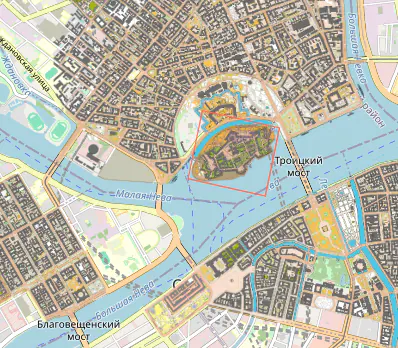

Общее описание
O-maps - это сайт-каталог спортивных карт (ориентирование, рогейн, охота на лис, туризм...). Здесь представлены более полутора тысяч карт разных авторов, мест, типов и годов издания. В данный момент в каталоге три региона - Санкт-Петербург, Москва и отчасти Белград. Можно посмотреть карты всех регионов на одной общей странице.
Отдельный раздел - "Старты на карте", где собраны районы и дистанции многодневок (Невский Азимут, Яркий Мир, ККП, ММС, Карельские скалы, Памяти Сергея Кузнецова) и серий стартов (Спринт-Тур, Ориентирование в школу, Bike/Trail Adventure, Марш-Бросок, RFAR, 100х24, ККМ) хронологически.
Вся информация о картах собрана в сводные таблицы - СПб, Москва, Белград и общая.
Помимо самих карт, есть и разнообразная статистика - СПб, Москва, Белград и общая.
Все карты в каталоге доступны для некоммерческого использования. Для проведения соревнований и получения качественных карт-материалов обращайтесь к их владельцам, имена и координаты которых везде по возможности указаны.
При желании Вы можете интегрировать O-maps в свой сайт. Разъяснительная страничка находится тут.
Старты на карте
...
Статистика
...
Сводные таблицы
...
Информация об отдельной карте и оглавление многодневки
...
Интеграция
...